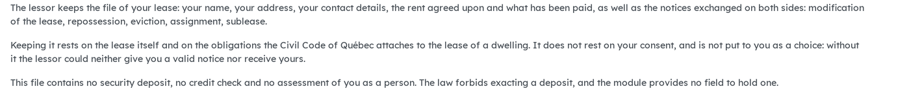
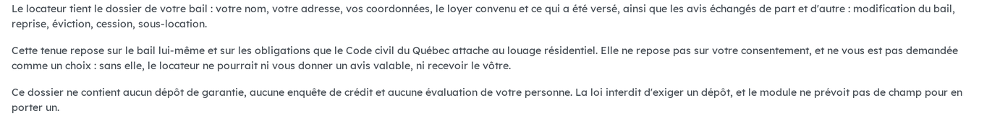

Version française plus bas.
The rental side collects two things the register of processing activities has to name, and they are not alike. The lease and its notices carry a person's name, address, contact details and rent: that is the ordinary keeping of a rental file. The ground of a resiliation under art. 1974.1 CCQ is of another nature: it reveals that a person is a victim of sexual violence, conjugal violence, or violence against a child living in the dwelling. This bridge declares them as two separate purposes, and installs itself when both sides are present.

The plain-language summary of the rental file purpose. The ground of a resiliation is declared as a separate purpose.
Requires Rental: notices (bf_rental_notice) and Co-ownership: privacy bridge (bf_property_privacy), which relies on Consent tracking (privacy_consent). Installs automatically.
Business Source License 1.1. You may use this module in production for your own internal business operations, which include administering immovables that you own or that you are constituted to administer, and letting a person acting on your behalf use your instance for that purpose. Administering immovables for the account of others, or providing the module to third parties as a product or service, whether hosted, managed or resold, requires a separate written agreement with the licensor. Each version converts to LGPL-3.0-or-later on the Change Date stated in the LICENSE file, which sets out the exact terms.
Le volet locatif collecte deux choses que le registre des activités de traitement doit nommer, et elles ne se ressemblent pas. Le bail et ses avis portent le nom, l'adresse, les coordonnées et le loyer d'une personne : c'est la tenue ordinaire du dossier locatif. Le fondement d'une résiliation de l'art. 1974.1 C.c.Q. est d'une autre nature : il révèle qu'une personne est victime de violence sexuelle, de violence conjugale, ou de violence envers un enfant qui habite le logement. Ce pont les déclare comme deux finalités distinctes, et s'installe de lui-même quand les deux côtés sont présents.

Le résumé en langage clair de la finalité du dossier locatif. Le fondement d'une résiliation est déclaré comme une finalité distincte.
Exige Locatif : les avis (bf_rental_notice) et Copropriété : pont vie privée (bf_property_privacy), qui s'appuie sur Suivi des consentements (privacy_consent). S'installe automatiquement.
Business Source License 1.1. Vous pouvez utiliser ce module en production pour vos propres activités internes, ce qui comprend l'administration des immeubles dont vous êtes propriétaire ou que vous êtes constitué pour administrer, et l'usage de votre instance à cette fin par une personne qui agit pour votre compte. Administrer des immeubles pour le compte d'autrui, ou fournir le module à des tiers comme produit ou service, hébergé, géré ou revendu, exige une entente écrite distincte avec le concédant. Chaque version passe sous LGPL-3.0 ou ultérieure à la date de changement inscrite au fichier LICENSE, qui fait foi.